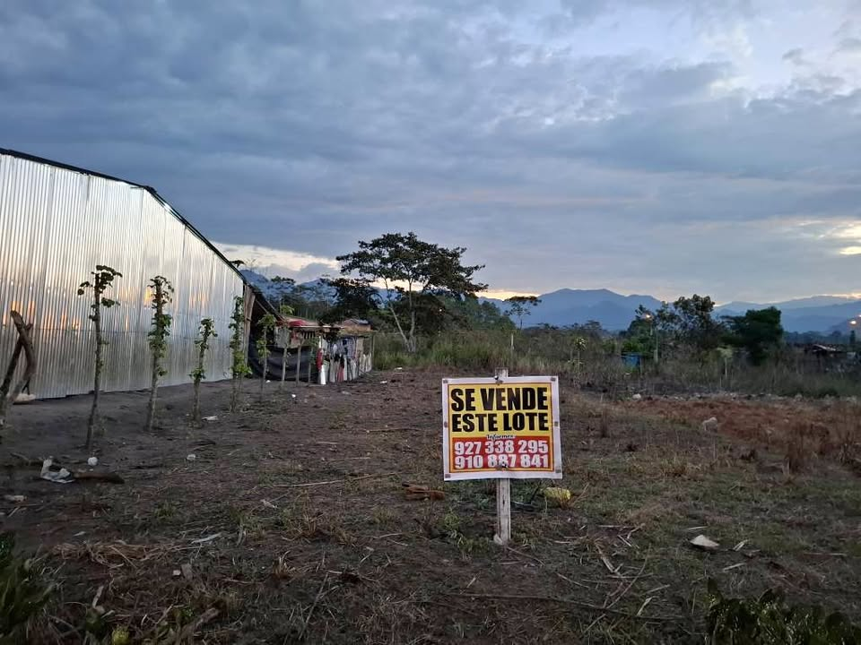

Precio desconocido 2.56 ha

De ocasión se vende un terreno urbano ubicado en el Jirón Uriel Huivin Burga, Mz. 13, lote 12, Sector Cocayacu, Distrito y Provincia de Rioja, Región Dan Martín, con una extensión superficial de 256.00 m2. Contacto: [hidden information]